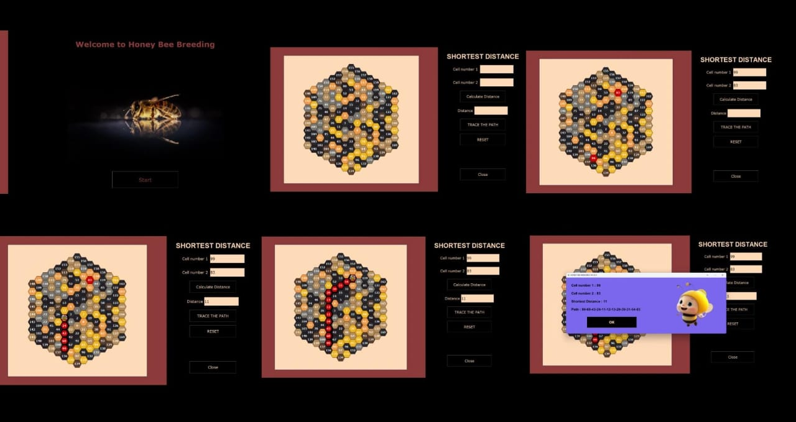
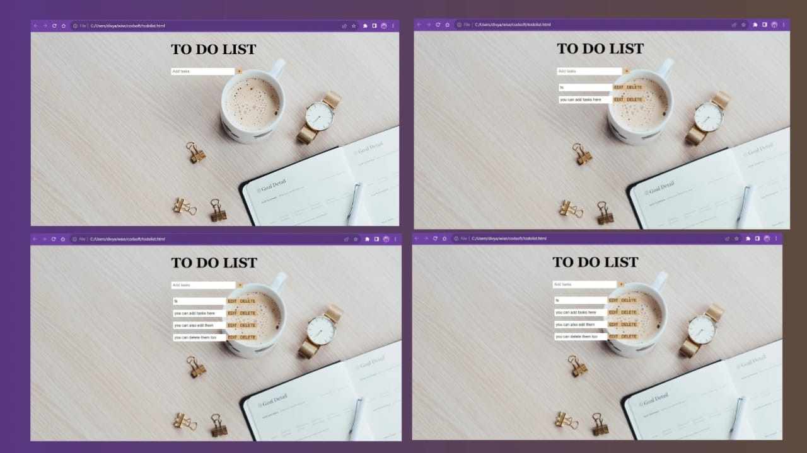

PROJECTS
Project 1 Description
This Python program simulates a honey bee breeding scenario, with a graphical user interface (GUI) using Tkinter. The program allows users to calculate the shortest distance between two bee cells and visualize the path taken by the bees.
This project combines mathematical calculations and visual representation to provide insights into honey bee breeding behavior and distances within their hive.

Project 2 Description
The Simple To-Do List Web Application is a beginner-friendly project that allows users to create, manage, edit, and delete tasks on a web-based to-do list. The application is built using HTML, CSS, and JavaScript for the front-end.
It utilizes local storage to store and manage tasks. It's designed for users who want a straightforward and user-friendly way to keep track of their tasks and to-dos.
